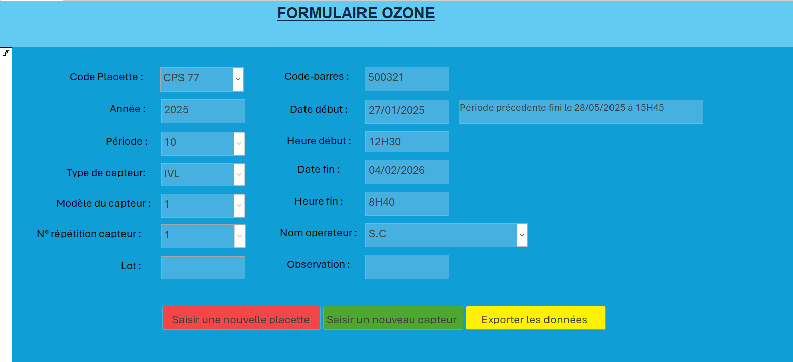

Stage Office National des Forêts

Présentation du stage
Dans le cadre d'une migration de base de données dans le Réseau RENECOFOR à l'ONF qui est le Réseau national de suivie des écosysteme forestier. J'ai eu pour mission de créer un formulaire de saisie de l'ozone qui est un gaz dangeureux à une certaine concentration pour les arbres (forte oxydation ) pour remplacer une ancienne version. Pour cela j'ai dû utiliser un système de gestion de base de donnée relationnelle? Microsoft Access qui m'a été imposé. Dnas un premier temps il m'a fallut me former à Access pour ce faire j'ai eu recours à des tutoriels sur Youtube ainsi qu'au forum de développement : Développer.net. Puis grâce à la table correspondant aux données saisies BDD de l'ozone fourni par RENECOFOR j'ai pu tester les différentes fonctionalitées d'Access pour créer une différentes versions du formulaire Pour réaliser ce projet j'ai dû mettre en place différente fonctionnalités afin de répondre au besoin d'homogénéité des données pour l'implémentation en base de données. Pour ce faire j'ai ajouter de nombreux filtre afin de m'assurer que les valeurs rentrées soit sous la forme et le type de données souhaité. Puis j'ai ajouter différents messages d'erreurs personnalisé afin de prévenir l'utilisateur pour qu'il puisse modifier sa saisie. Enfin j'ai ajouter différentes fonctionnalités pour rendre le formulaire le plus efficace, ergonomique et pratique à utiliser afin de faciliter une tache redondante.